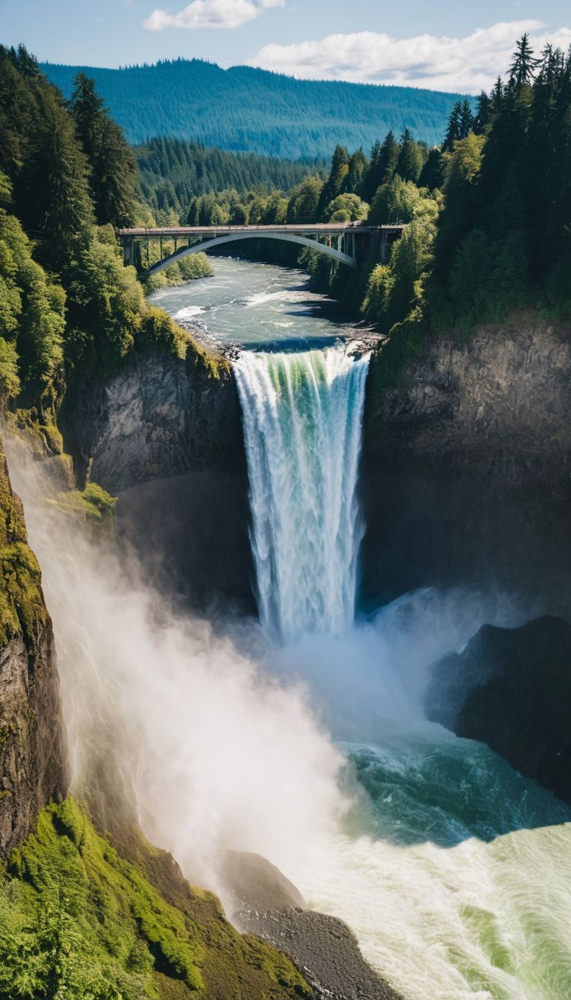
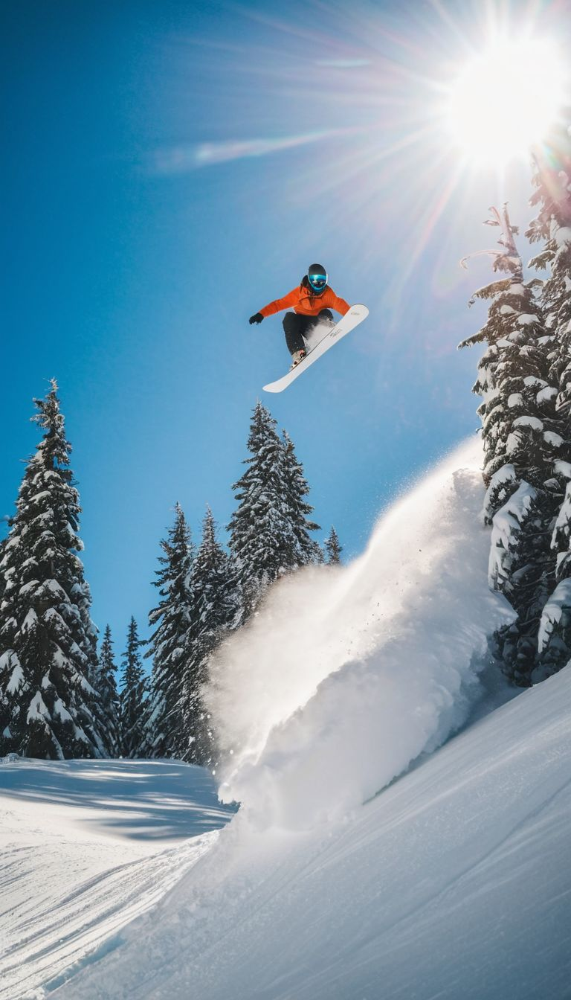

Snoqualmie city, nestled in the foothills of the Cascade Mountains near I-90. It is renowned for its natural beauty and outdoor recreational opportunities. Also known for the powerful Snoqualmie Falls, this charming city offers a gateway to adventure with activities like hiking, skiing, snowboarding and outdoor adventure while exploring the picturesque Snoqualmie Pass. The town's history is rich with Native American heritage and early settler influences, adding to its rich cultural atmosphere. Whether you're visiting the historic Snoqualmie Train Depot, enjoying the local dining scene, or taking in the breathtaking views, Snoqualmie presents a blend of natural wonder and small-town charm.
A stunning 268-foot waterfall and one of Washington’s most popular natural attractions.
Snoqualmie Falls, a majestic 268-foot waterfall located in Snoqualmie, Washington, is one of the most visited natural landmarks in the Pacific Northwest. This awe-inspiring cascade is not only a symbol of the region's natural beauty but also a popular spot for both locals and tourists. The falls are easily accessible from the observation deck, which offers panoramic views of the waterfall and the surrounding lush forest. Snoqualmie Falls has been a significant site for the Snoqualmie Tribe for centuries, and its breathtaking appearance is enhanced by the surrounding natural landscape.
A historical museum showcasing vintage locomotives and offering scenic train rides.
The Snoqualmie Railroad Museum, located in the heart of Snoqualmie, Washington, is dedicated to preserving the rich history of railroads in the Pacific Northwest. The museum features a collection of historic locomotives and rail-cars, providing a glimpse into the region's transportation heritage. Visitors can explore the restored train cars, learn about the history of the railroads, and take scenic train rides through the picturesque Snoqualmie Valley. The museum’s exhibits and artifacts highlight the significant role that railroads played in the development of the region, making it an engaging and educational experience for history enthusiasts and families alike.
A major mountain pass offering year-round outdoor activities, including skiing, mountaineering and hiking.
Snoqualmie Pass, located in the Cascade Range, is a prominent mountain pass in Washington that serves as a gateway to a variety of outdoor activities. Renowned for its winter sports, the pass hosts several ski resorts that offer excellent skiing and snowboarding opportunities. In the summer months, Snoqualmie Pass is great for hiking, mountain biking, swimming and scenic exploration. The area's rugged terrain and breathtaking views attract adventurers and outdoor enthusiasts year-round, making it a popular destination for those looking to immerse themselves in the natural beauty of the Pacific Northwest.
|
Popular Attractions
|
Snoqualmie FallsSnoqualmie Falls is a 268-foot waterfall and a major attraction in Washington.
|

|
|
Outdoor Recreation
|
Outdoor RecreationSnoqualmie offers a variety of outdoor activities year-round, including hiking and skiing.
|

|
Explore more about Washington State on Wikipedia.
Legal Disclaimer: All images on this page are CGI and are not intended to depict any real person. This is an educational prototype website designed to demonstrate HTML, CSS, and JavaScript basics.